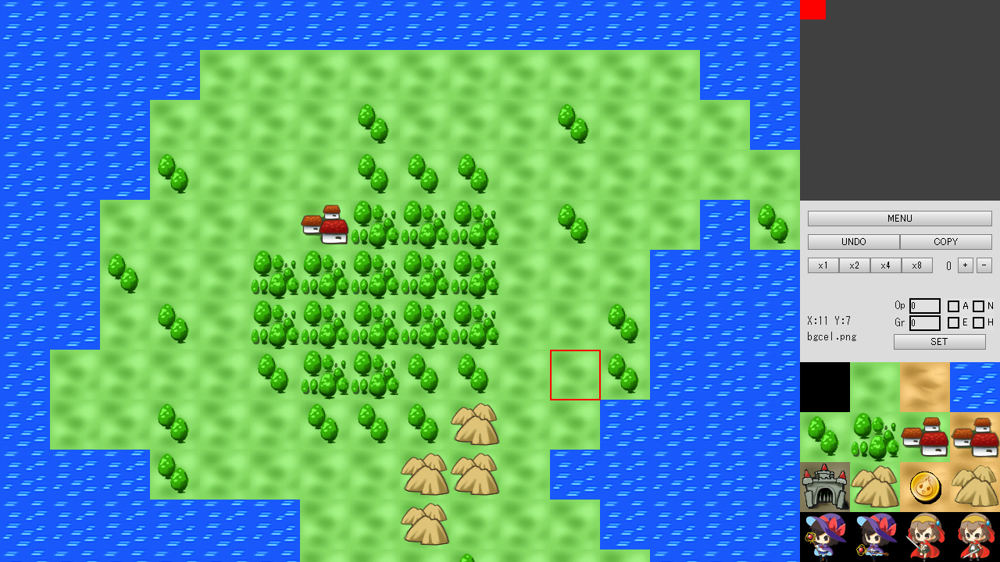
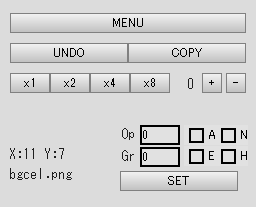

HSP : Hot Soup Processor ver3.7 / onion software 2023-(c)
Map Editor Tamamap Manual

- Introduction
- How to Use
- Explanation of the Tool Screen
- Map Area
- Map Navigation
- Tool Area
- Cell Area
- Menu Screen
- Copyright and License
Introduction
Tamamap is a tool (map editor) for editing 2D-based cell (tile) maps that can be used with the Tamane Dot Framework.
It has the following features:
・Edit 2D maps of arbitrary size ・Cell attribute settings and editing ・Integration with Tamane Dot Framework ・Map file (.tmap format) loading, saving, and merging ・Because it is a tool made with HSP3Dish base, it can also operate in Linux, Raspberry Pi environment
It has various functions to easily construct a wide world.
How to Use
Tamamap can be launched from the menu of the standard script editor.
Tamamap will be launched by selecting the "Open Map Editor" item in the "Tool" menu.
hspsdk/tamamap/tamamap.hsp
Since the source code is included in the above location of the HSP full package, it can also be used by reading and executing this file from the HSP script editor.
Explanation of the Tool Screen

The tool screen is largely divided into four areas. These are called Map Area, Map Navigation, Tool Area, and Cell Area, respectively.
Edit the map while properly using the functions in one window.
Map Area
The area where the map being edited is displayed. A portion of the large map is displayed by scrolling.
In addition to being able to adjust the currently displayed position with Map Navigation, it is also possible to scroll with the up, down, left, and right cursor keys. The display magnification can also be changed with the buttons in the Tool Area.
You can set the map at the cursor position with a left click of the mouse. The cell to be set is the cell selected in the Cell Area.
You can refer to and select the cell on the map at the cursor position by right-clicking the mouse.
Map Navigation
Guides the position and size that the Map Area is displaying within the entire map.
You can directly change the position being scrolled by left-clicking the mouse.
Tool Area

Displays information about the current cursor position and selected cell.
The interface for selecting the functions of the map editor is also summarized.
Each has the following functions.
- MENU button
Opens the Menu Screen.
- UNDO button
Returns to the previous state, it is possible to return only one step
- COPY button
Copies a part of the map (rectangle). Select the upper left block to be copied first, and then select the lower right block to enter the mode to copy that rectangular range. After that, by pressing the left button, the map of the copy source is copied to the cursor position.
- ×1〜×8 buttons
Specifies the magnification of the map area
- +、- buttons
Moves the bank (display position) of the cell area
- SET button
Sets the Op value, Gr value, and A, N, E, H flag states for the cell selected in the cell area. If multiple cells are selected, the same content is set for all cells
- Op value
Enter the Op (Option) value directly. This value is a value that can be used generically in the script.
- Gr value
Enter the Gr (Group) value directly. In the Tamane Dot Framework, it is used for setting the priority. 0 is normal display, and if it is set to 1, the background is displayed in front of the sprite.
- A (Animation) flag
Applies 4 patterns of animation display to the map cell
- N (Notice) flag
Enables the notification (Notice) flag when displaying map cells
- E (Event) flag
Enables the event (Event) flag when map cells collide
- H (Hold) flag
Enables the Hold flag when map cells collide, which makes it impossible to enter when colliding from above. If the H (Hold) flag and the E (Event) flag are set at the same time, it will be a wall that cannot be entered from all directions.
Cell Area
Displays the cells (images that are parts) that are the source of the map, and allows you to select some of them.
The selected cell can be placed in the Map Area.
The attributes of the selected cell can also be set in the Tool Area.
You can select the cell at the cursor position by left- or right-clicking the mouse in the cell area.
You can select multiple cells by selecting a range while holding down the right mouse button.
Menu Screen

On the menu screen, you can perform file operations and change tool options.
- <<
Exits the menu and returns to the editor screen
- Load
Loads a file so that you can edit the map
- Save
Saves the map being edited to a file
- Save as...
Saves the map being edited to a file with a different name
- New
Discards the map being edited and initializes a new map
- Merge
Merges (synthesizes) a part of the map from another file into the map currently being edited
- Label
Edits the label information of the map to be used generically. The value specified here can be referenced from the script when loading the map data
- Web
Displays related web pages
- Option
Edits the tool options
Copyright and License
The copyright and license of Tamamap are the same as the "HSP Development System". You are free to modify, alter, and publish the source code.